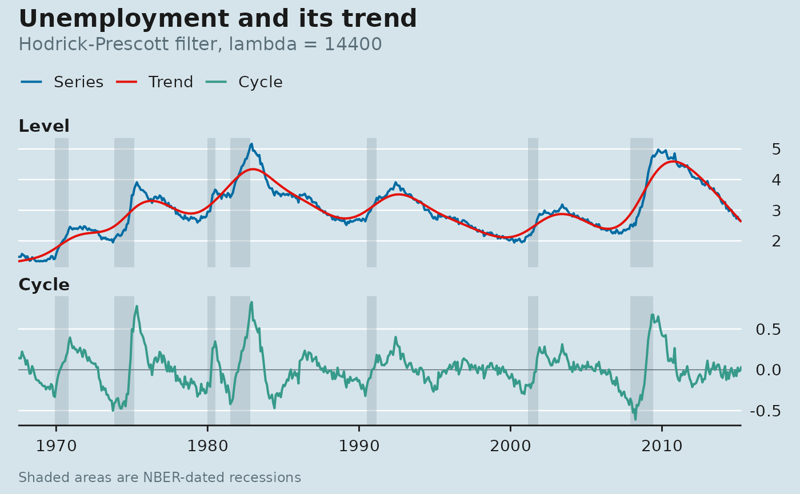

Two panels in the house style: the series with its trend, and the cycle below it around zero. With dates present, NBER recessions are shaded.
Usage
plot_trend_cycle(
tc,
title = NULL,
subtitle = NULL,
source = NULL,
recessions = TRUE,
panel = "blue"
)Arguments
- tc
A
trend_cyclefromhp_filter()orhamilton_filter().- title, subtitle, source
Passed to
labs_econ(); sensible defaults are filled in.- recessions
Shade NBER recessions? Only possible when
tchas adatecolumn.- panel
Passed to
theme_econ().
Value
A ggplot object. Add econ_masthead() last if you want the block.
Examples
econ <- ggplot2::economics
u <- data.frame(date = econ$date, value = 100 * econ$unemploy / econ$pop)
plot_trend_cycle(hp_filter(u, frequency = "monthly"),
title = "Unemployment and its trend")
